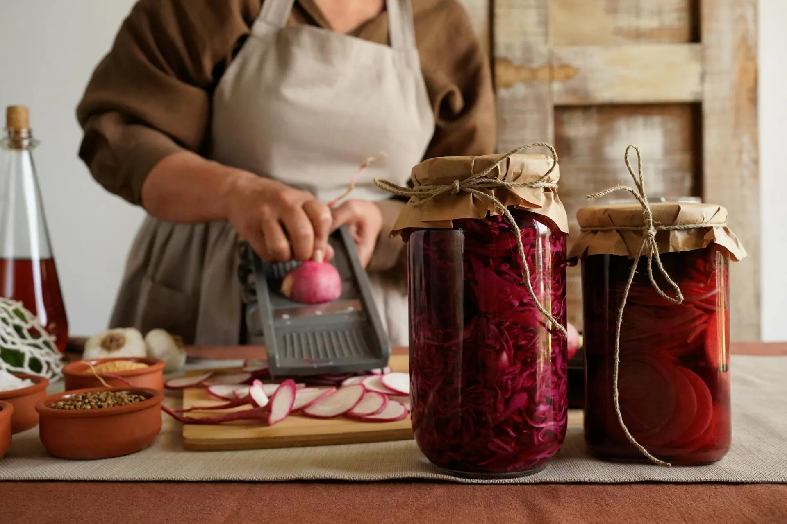

From Grain to Living Koji
The koji cultivation process requires five days of continuous attention — from selecting heirloom grain to harvesting fully colonized rice at peak enzyme activity. Every step carries consequences that echo through the final flavor of every product we make.
The Five Stages
Koji cultivation follows a precise sequence of conditions and timing. The brewer's role is not to control the mold, but to create the conditions in which it can express its full enzymatic potential.

Grain Selection
The koji process begins not in the muro but in the field. We source heirloom Koshihikari rice from a single farm in Murayama, Yamagata — a cold-climate variety prized for its dense starch content and clean flavor. The grain is polished to a specific ratio depending on the intended product: 70% for sake koji, 80% for miso, 90% for shio koji.
Polishing removes the bran layer that would interfere with spore penetration, exposing the starchy endosperm for koji colonization. The precision of this ratio is not aesthetic — it directly determines the enzyme profile of the finished koji.

Steaming in Cedar
After a 12–16 hour soak in pure spring water drawn from the Kamo headwaters, the grain is loaded into traditional cedar koshiki steamers and placed over a wood-fired cauldron beginning before sunrise. The steam must rise evenly through the grain bed; any cold spots will produce uneven koji growth.
The texture at completion is what brewers call gaiko nainan — firm outside, soft within. Too soft and the grain collapses under mycelium weight; too firm and the spores cannot penetrate. The brewer tests by pressing a single grain between thumb and forefinger.

Spore Inoculation
While the steamed rice is still warm — ideally at 35–38°C — it is spread across the koji tables and dusted with tane-koji spores using a hand-held bamboo sieve. The uniformity of distribution at this stage is the single most important variable in koji quality.
We use three distinct tane-koji strains depending on the product: an amylase-forward strain for sake and amazake production, a protease-heavy strain for miso, and a balanced heritage strain for shio koji. Each strain is maintained in our cold archive and propagated from living cultures dating back multiple generations.

Muro Incubation
Inoculated rice is transferred to the muro in shallow cedar trays and covered with linen to maintain moisture. The brewer does not sleep through this period — every two hours, the koji is turned and kneaded by hand to distribute heat generated by the growing mycelium and prevent temperature spikes that would kill the culture.
At the 24-hour mark, the koji enters its most vigorous growth phase. The mycelium threads between grains are visible to the naked eye; the temperature within the pile can rise 5–8°C above ambient. This is the moment requiring the greatest skill and the most decisive intervention.

Harvest at Peak Activity
The harvest moment is determined by sensory evaluation, not by a timer. The koji is ready when the mycelium has produced a dense white bloom across each grain, the fragrance has shifted from earthy to a complex chestnut-sweet with floral notes, and the temperature of the pile has begun to fall after its peak.
Harvested at this moment, the koji contains the highest concentration of active amylases and proteases. Any delay allows the mold to proceed into its reproductive cycle — producing spores rather than enzymes, and bitterness rather than sweetness. Timing is not a preference; it is the entire product.
Inside the Muro
The muro — literally "room" in Japanese — is the ancient koji cultivation chamber. Ours was constructed in the 1920s by the fourth-generation Hayashi brewer, built from Yoshino cedar and insulated with packed clay and rice husk ash. The walls breathe in a way that modern insulation materials cannot replicate.
Cedar is not merely traditional — it actively contributes to the koji environment. The wood's natural porosity allows for micro-scale humidity exchange; the aromatic compounds of cedar create a mildly anti-bacterial atmosphere that protects against contamination while supporting Aspergillus oryzae. No synthetic material has been found that matches these properties.

48 Hours, No Rest
The incubation phase demands the brewer's presence throughout. Below is the typical rotation schedule during a koji cultivation cycle.